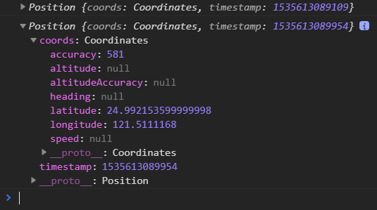

Demo(需打開定位)
今天要來練習取得經緯度
除了經緯度外，我們就試著把取得的資料全部印出來吧
navigator
詳細介紹，Navigator 介面標示了用戶代理（user agent）的狀態與身份。它允許腳本查詢與註冊，以進行一些活動。
白話解釋：翻譯為「導航」的意思，後面可以做一些事情
像day19的取得相機也有用到
地理位置定位 geolocation
getCurrentPosition() / watchPosition()
getCurrentPosition()：透過此方法可以取得目前位置。
當成功取得位置後，會回傳一包含位置資訊的物件，並隨即執行特定的回呼常式。可能取得較低精確度的資料 (IP 位置或 WiFi) 而隨即開始作業。
watchPosition()：追蹤目前位置。
此方法會持續追蹤在定位資料，當此資料改變時，會回傳一包含位置資訊的物件，並隨即執行特定的回呼常式。可能是裝置移動，或取得更精確的地理位置資訊
屬性
- coords.latitude：緯度。
- coords.longitude：經度。
- coords.accuracy：精準度(getCurrentPosition精準度小於watchPosition)
- coords.altitude：海拔高度(米)。
- coords.altitudeAccuracy：海拔精準度。
- coords.heading：前進方向的角度，以北方為0度順時針計算。
- coords.speed：目前的速度(米/秒)。
- timestamp：當下時間。
進入主題
1 |
|
console.log看看

所以我們就可以將這些資料直接取出來顯示在畫面上了
1 | const show_latitude = document.getElementById('latitude') |